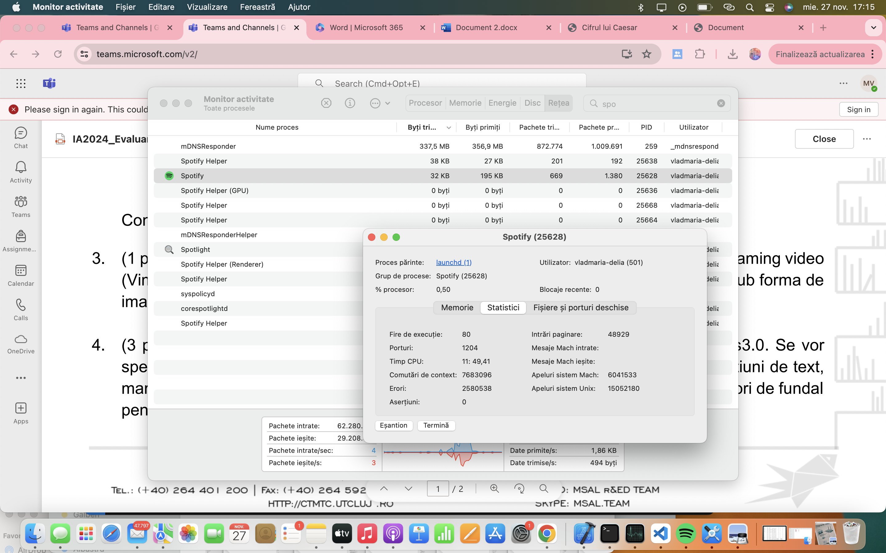
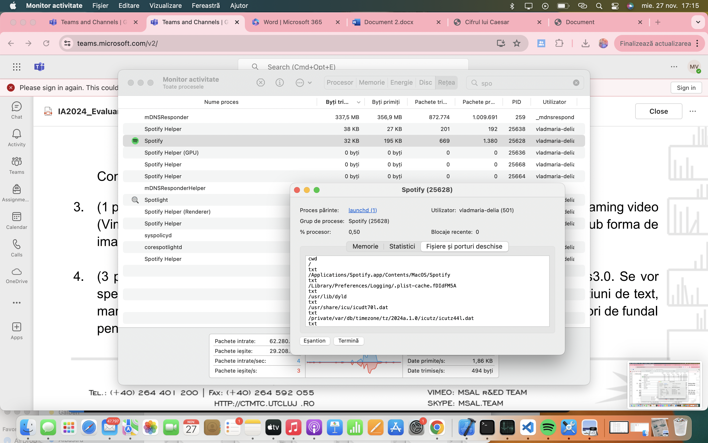
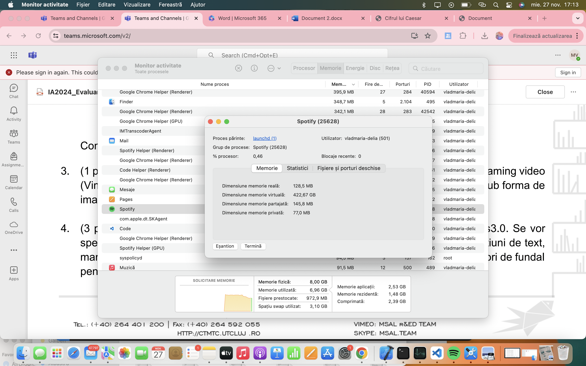
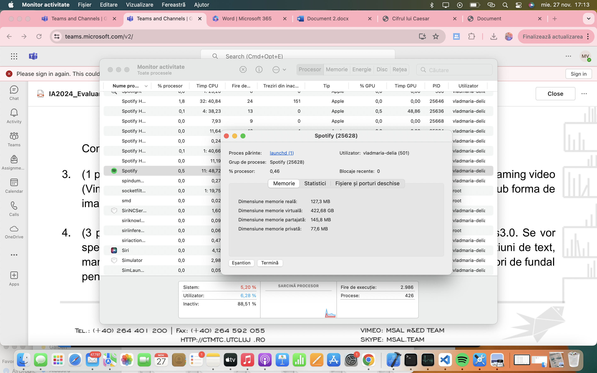
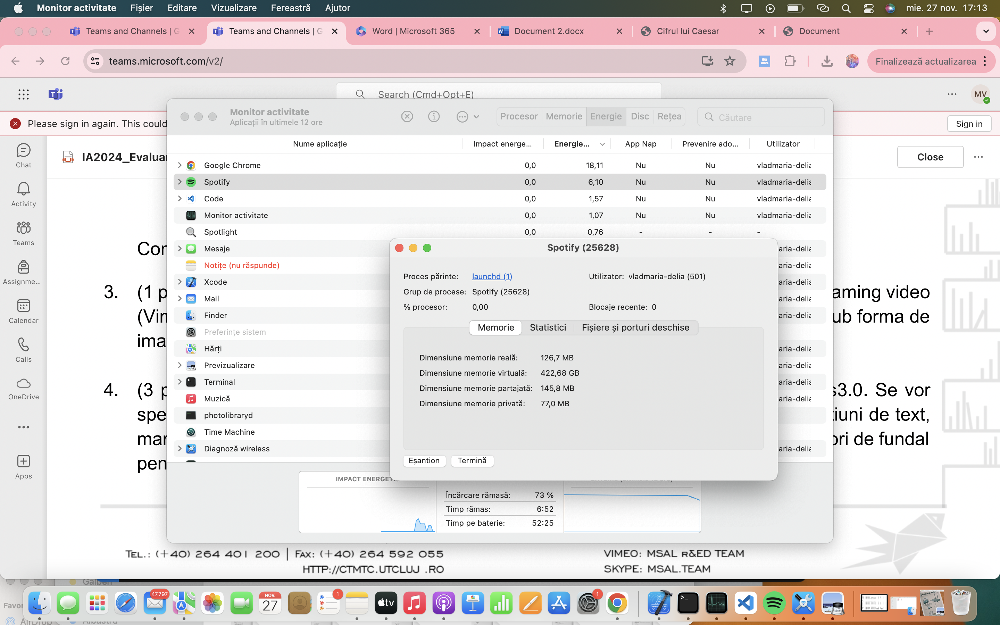
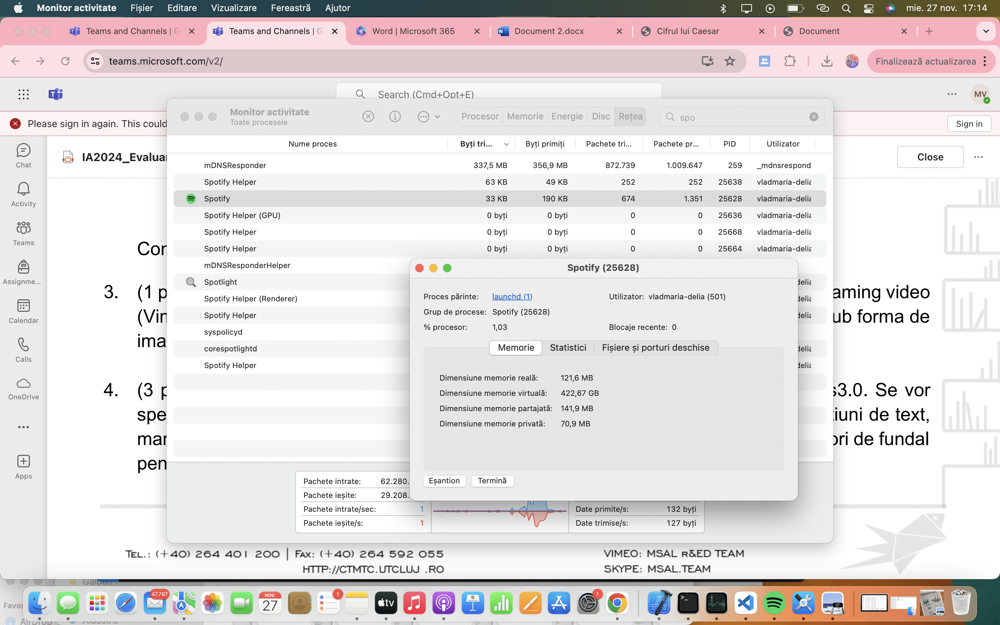
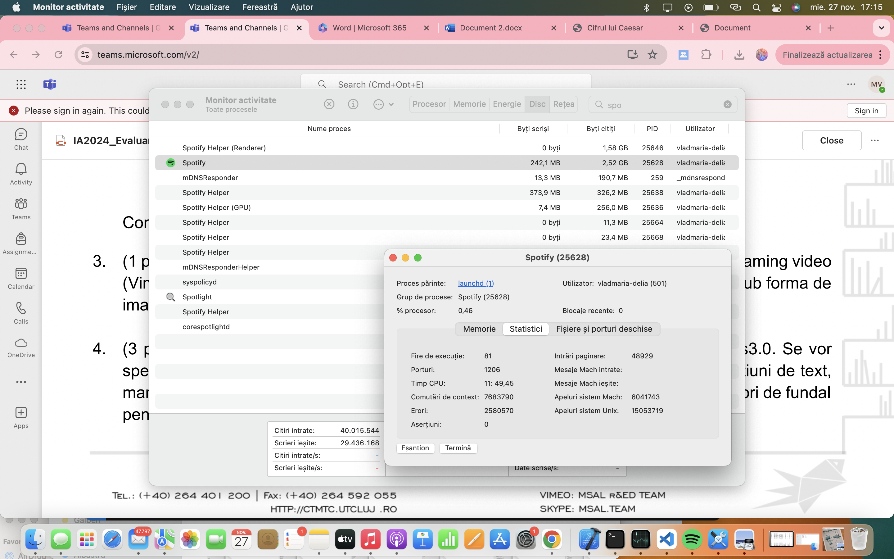

Caracteristici conexiune retea
- Adresa IP: 172.20.10.5
- Router:172.20.10.1
- Secyritate:WPA2 Personal
- BSSID:42:a3:63:fa:8b:4a
- Canal:6 (2,4 Ghz,20Mhz)
- RSSI: -22 dBm
- Zgomot:-99 dBm
- Mod PHY: 802.11n
- Index MCS
Monitorizare Resurse






